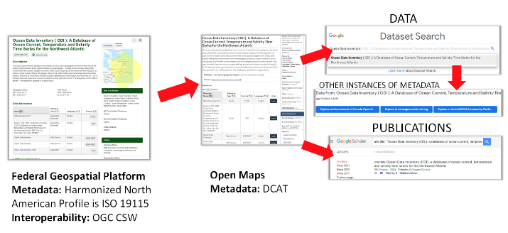

The Ocean InfoHub Project & ODIS#
Introduction#
The Ocean InfoHub aims to build a sustainable, interoperable, and inclusive digital ecosystem for all Ocean data centres. Existing and emerging data systems are linked, with the ultimate goal of coordinating action and capacity to improve access to Ocean data and knowledge.
The following video provide brief high level context to the Ocean InfoHub project.

(read the original ODIS Proposal)
Organizations are increasingly exposing data and resources on the Web. A popular approach to this is using web architecture to expose structured data on the web using the schema.org vocabulary. Doing this makes resources discoverable by a range of organizations leveraging this architecture to build indexes. These include major commercial indexes, large domain focused groups and community focused services.
The Ocean Data and Information System (ODIS) will provide a schema.org based interoperability layer and supporting technology to allow existing and emerging ocean data and information systems, from any stakeholder, to interoperate with one another. This will enable and accelerate more effective development and dissemination of digital technology and sharing of ocean data, information, and knowledge. As such, ODIS will not be a new portal or centralized system, but will provide a collaborative solution to interlink distributed systems for common goals. Together with global project partners and partners in the three regions, a process of co-design will enable a number of global and regional nodes to test the proof of concept for the ODIS.
The ODIS-architecture development is being supported by the Ocean InfoHub Project, and it has been tested initially on IOC and partner databases. However, the system and standards are open for any institution or initiative that is interested in accessing the global data ecosystem to adopt and implement.
Guidance for the implementation of the ODIS-architecture#
OIH is providing guidance on the various stages of such an architecture including authoring, publishing, indexing and interfaces.
The basics of this approach can be described as:
Providers publish HTML pages for a resource. This may be a publication, course description, research instrument or other. The core themes for OIH are described in the Authoring section below.
A HTML page then has a small JSON based snippet added to the HTML. This is described in the Including JSON-LD in your resource page in the Publishing resource below.
If you wish a resource to be included in the OIH index, then you need to include it in a sitemap file. This is a small XML document that lists links to the resources you wish to be part of the index. This approach is shown in the sitemap.xml section of the Publishing resource.
Once the above is done the publishing phase is over. At this point, OIH or other groups can now access and index your resources. OIH is using some existing software to index and generate the graph and expose a simple reference interface to them. This software is open and available and others are free to implement the approach with other software. Links to other software are at the repository.
The OIH index/graph and a simple interface is current at a development site and in a later phase of OIH a production interface will be developed.

Additionally, software to aid in validating and checking the resources is under development and will be available at the repository. This will aid providers in expressing the information needed to address interfaces and services of interest to the community.
The result is a sustainable architecture to address discovery and access to various resources published by the community and a shared graph of these resources. That shared graph can be used by all members to link and discover across groups.
Key links to the OIH GitHub repository#
Interested groups can review material addressing these stages at the OIH GitHub repository. Links and descriptions of these stages are described below.
Publishing#
Guidance on implementation the web architecture approach is also available. This includes approaches on leveraging robots.txt and sitemaps.xml file for expressing hosted resources to the net.
Indexing#
The architecture approach is open and standards based. As such, many organizations will be able to leverage the authoring and publishing approaches above to index a providers resources. OIH will be providing reference implementations of software that can generate the index.
Interfaces and Services#
During the development of the OIH a basic reference implementation for an interface has been generated. This is a development site meant to test and exercise the above elements. It serves to demonstrate how others could also implement this approach and how future interfaces could be developed.
An example of the value of implementing a lightweight can be seen with the Government of Canada:
The Federal Geospatial Platform is a intra-governmental data catalogue implementing the Harmonized North American Profile of ISO 19115 (HNAP), with content exposed externally via OGC CSW (Catalogue Services Web).
This content is harvested by the public facing Open Maps platform, which includes a catalogue component that is fed in part by the Federal Geospatial Platform. DCAT-based metadata is derived from the original ISO 19115 based metadata. As this markup is recognized by web crawlers such as those hosted by Google, content is harvested and is subsequently visible through Google Dataset Search. Furthermore, the cited publication for the data is also link via a complementary link to Google Scholar.
